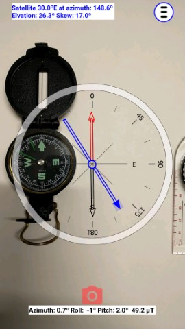
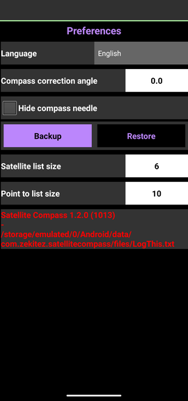

To report a problem with Satellite Compass:
- Calibrate the compass of a phone. Click here for instructions !!
- Take a screenshot with a real compass to demonstrate that
the compass needles of the phone and the real compass are aligned.
- I need data to investigate what goes wrong.
Start data logging by tapping 10+ times on the version number of the Preference screen.
Data is logged in a file named "LogThis.txt". The location of the file is /Android/data/com.zekitez.satellitecompass/files/LogThis.txt.
The logging finishes when you Quit/Exit the app.
The logging does NOT restart when you use the app again.
The logging file is readable.
- While data logging is running go through the screens/menus to demonstrate the problem. Make a screenshot of the problem.
- Quit the app, try to make a detailed description of the problem
and send the description, the screenshots and file LogThis.txt to me.
Please, try to describe details of the problem you have, or what you see.
A description as "It does not work." does not have any helping information to understand the problem.
|
 
|